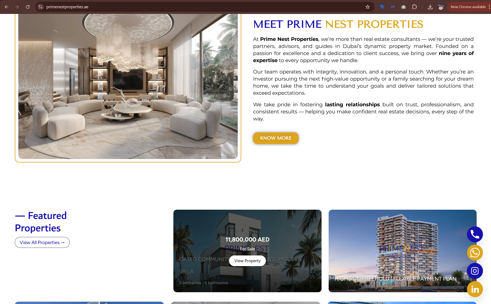
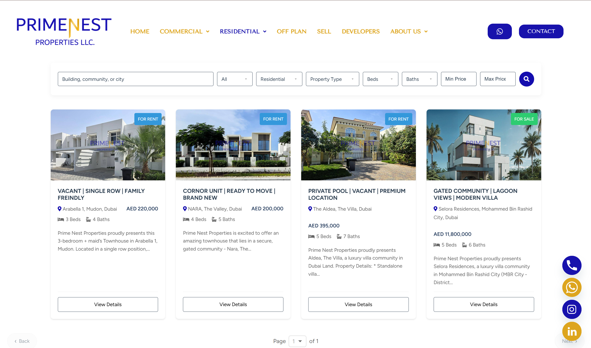

Prime Nest Properties
Building the digital platform behind a new brokerage launch.
Prime Nest Properties was a newly formed real estate brokerage that needed its digital presence built from the ground up. I led the setup of its technical and digital foundation, including domain and hosting, social account creation, business infrastructure coordination, and the development of a custom WordPress website connected directly to the Pixxi CRM. The result was a scalable platform where listings could be managed through the CRM and displayed on the website in real time through dynamic search and filtering.

New brokerage launch
Built the digital foundation for a newly formed real estate brokerage entering the Dubai market.
WordPress website with custom plugin architecture
Created a custom setup designed to support listings, search, growth, and future marketing use.
Pixxi API integration, AJAX filtering, live listings
Connected the website directly to the CRM so listings could be managed centrally and displayed dynamically.
Scalable listing management and property discovery
Built around operational efficiency, user-friendly search, and a strong foundation for future marketing activity.
A new brokerage needed a full digital foundation from zero
Prime Nest Properties was launching as a new brokerage and needed the core digital infrastructure that would allow the business to operate professionally and scale smoothly.
What I walked into
There was no website, no property platform, no domain and hosting setup, no connected listing management system, and no digital presence prepared for launch. The business needed a platform that could support both day-to-day brokerage operations and future marketing activity from the start.
Core gaps
- No domain or hosting environment
- No website platform
- No CRM-connected property feed
- No searchable property discovery experience
- No live listing system for ongoing inventory updates
- No social media presence prepared for launch
Technical implementation with a strong marketing lens
This project combined technical execution, platform architecture, user experience thinking, and launch preparation. I built the digital foundation while keeping the end goal clear: a functional brokerage website that could support both operations and future growth.
Infrastructure setup
- Purchased and configured the domain
- Set up the hosting environment
- Coordinated business email and Microsoft setup through a technical contact
- Created the company’s social media accounts
Platform ownership
- Built the WordPress website and core property experience
- Developed the custom Pixxi CRM integration in PHP
- Created dynamic search and listing modules
- Designed the setup to reduce manual listing maintenance
The platform behind the brokerage launch
The work centered on turning a new brokerage idea into a functioning digital platform that could support listings, search, and future marketing activity without depending on manual website upkeep.
Website platform
Built the company website in WordPress as the main digital hub for the brand, its listings, and future acquisition activity.
- Developed the website structure for a new brokerage
- Created listing pages and property-related templates
- Built a marketing-ready platform that could grow with the business
- Prepared the site to support future digital campaigns and lead generation
Custom Pixxi CRM integration
Built a custom PHP-based integration with Pixxi so the website could pull live listing data directly from the CRM.
- Created a custom WordPress plugin for Pixxi integration
- Connected the site to live CRM property data through API requests
- Structured the system so listings could be managed centrally in Pixxi
- Reduced dependence on manual property updates inside WordPress
Dynamic listing system
Built reusable listing modules and display logic so property content could be rendered dynamically across the site.
- Developed shortcode-based listing components
- Created dynamic property grids and listing sections
- Supported both listing visibility and future website flexibility
- Built the foundation for a cleaner content management workflow
Search and filter UX
Designed a buyer-facing property discovery experience with filters built around real browsing needs.
- Implemented AJAX property filtering for smoother interactions
- Built unified search across location, developer, and project
- Added filters for property type, bedrooms, completion, and price
- Improved the usability of off-plan browsing through a cleaner filter flow
Business infrastructure setup
Supported the technical setup required to get the brand operating professionally from day one.
- Configured domain and hosting infrastructure
- Helped coordinate email and Microsoft product setup
- Created and prepared social media accounts for launch
- Gave the brokerage a working digital base beyond just the website
Plugin architecture and extensibility
Built the site with a custom plugin structure that made the platform more adaptable for future changes and features.
- Organised custom functionality into reusable PHP classes
- Handled API logic, rewrites, AJAX, templates, and search hooks
- Created a more maintainable structure than one-off theme edits
- Built a technical foundation that could evolve with the business
Handover and later design changes
After the website was handed over, the client later engaged a separate SEO team that changed the visual styling and theme of the website. The platform structure, Pixxi integration, live listing logic, dynamic search system, and technical foundation built during my scope remained the core functional layer of the site.
What this work changed
The project gave Prime Nest a launch-ready brokerage platform with live property management, stronger operational efficiency, and a digital setup that could support future marketing and growth.
Launch-ready website
Prime Nest gained a fully functional digital platform ready to support the brokerage from launch.
Centralised listing management
Property inventory could be managed through Pixxi CRM while updating on the website in real time through the custom integration.
Reduced manual workload
The live CRM connection removed the need to manually recreate and edit listings inside WordPress for routine inventory updates.
Examples of the platform in action

Brokerage website platform
WordPress website built as the digital foundation for a new brokerage brand entering the market.

Live listings and search experience
Custom listing system connected to Pixxi CRM with dynamic search and filtering built around property discovery.
What this project says about how I work
- I build platforms that connect marketing needs with operational systems.
- I am comfortable working across WordPress, PHP, APIs, search UX, and digital setup.
- I design systems that reduce manual work and make future growth easier to support.
- I translate CRM data into useful customer-facing web experiences.
Want to see another project?
My next case study can shift back toward campaign execution and paid media, or into consulting and SEO oversight, depending on which side of my work you want to explore next.